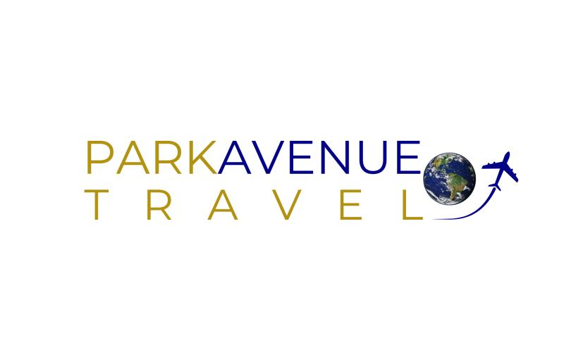

About Me
I’m Lisa, a research-driven designer with hybrid technical skills informed by my background in classical piano, performance, and creative teaching. I enjoy working with clients to create solutions that are both attractive and accessible.
More
This portfolio showcases RunScape, a mobile app prototype I designed using Figma, as well as some recent samples of my freelance web design work for clients in the music and travel industries. To show my level of proficiency in JavaScript, I've embedded a link to an in-progress project on GitHub featuring a composer's music catalogue. The link to a video trailer I created for a collaborative music/arts event in Toronto is the final piece.
If there is anything you should know about my work style, it's that while I am creative, I'm also highly practical. And neat. That means, I don't just create. I make sure that files are named according to set conventions. I keep in mind what is best for the company, client, customer, and product. Similarly, like many designers I've mindfully adapted the use of AI tools into my workflow. I believe in using technology to enhance creativity, not replace it.
Selected Projects
RunScape – Running App 2025 | Figma
RunScape is a mobile app prototype designed with and for runners.
I
interviewed a diverse set of participants whose ages spanned four
decades to uncover the key features they wanted in a local running
app. We started with a current state analysis of the Running Routes
application I had previously designed and coded, and used that as a
springboard for this new and improved product.
RunScape supports route planning, community connection, and
integration with popular health apps.
Ann Callaway, composer – Web Design 2024 | Squarespace
An award-winning American composer needed a new domain and website. For ease of maintainability, we chose Squarespace. I designed the site quickly to meet a deadline before an important performance. Palette decisions and styling were based upon the vibrancy of the composer's musical oeuvre and natural surroundings in California.
Park Avenue Travel, Inc. – Web Design 2023 | WordPress with Elementor Pro
Park Avenue Travel needed a new website and matching business cards to replace decade+ old designs. The owner requested an updated logo to reflect the current direction of the 35-year-old travel agency. The new site was the result of several Zoom meetings and back-and-forth email correspondence to ensure client satisfaction. It was built using WordPress + Elementor Pro with custom HTML5 and CSS3 styling added. Files were meticulously renamed for SEO optimization.
View Park Avenue Travel's Website
Music Catalogue – JavaScript Project | GitHub (WIP)
I began this project in December of 2024 primarily for the sake of practicing JavaScript using real-world datasets. All of the information is drawn from the composer's Squarespace website, which I currently maintain.
Clavier à Couleurs: An Exhibit of Piano Preludes – Video Trailer 2019 | Final Cut Pro
I led the production and editing process of a video trailer for a collaborative music/arts event in Toronto in which I was a performer. The video was designed to be shared on social media and featured a mix of original footage and stock images.
View the Video Trailer on Vimeo
Resume
Download my resume: Lisa's Resume
View my profile on LinkedIn: Lisa's LinkedIn Profile
For a look at my coding work, visit my GitHub: Lisa's GitHub Profile
Contact
Email me: lisa.raposamillar@gmail.com